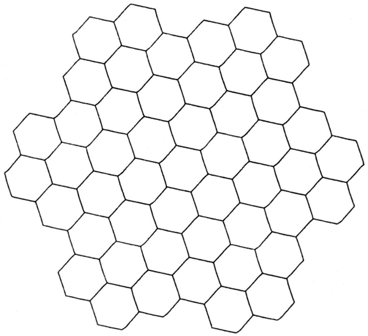
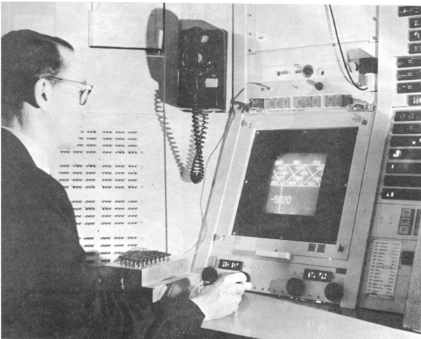
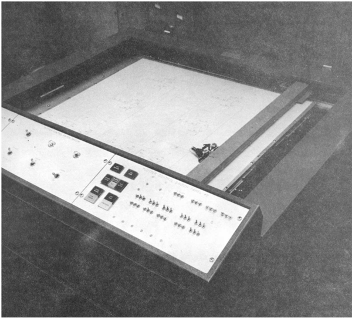
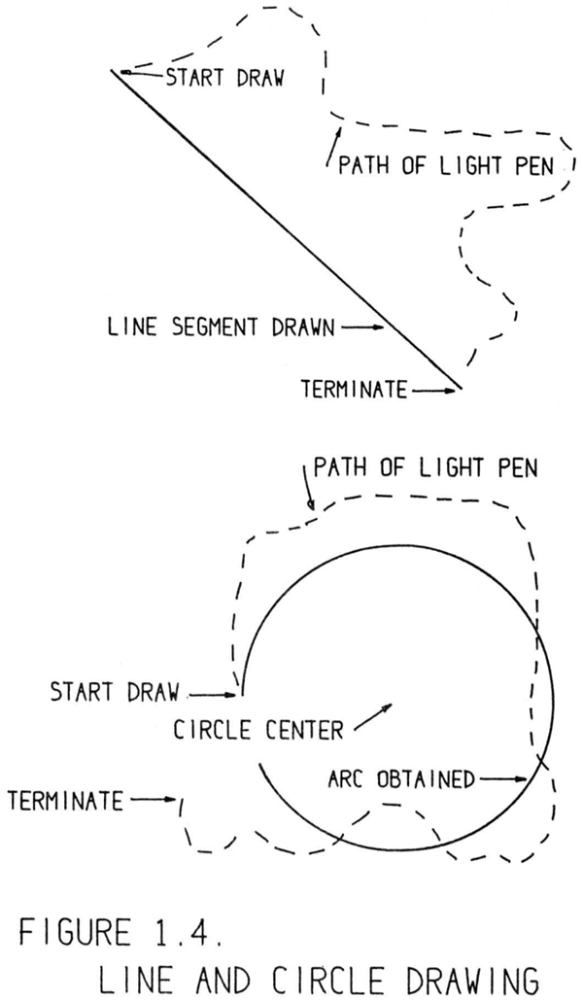
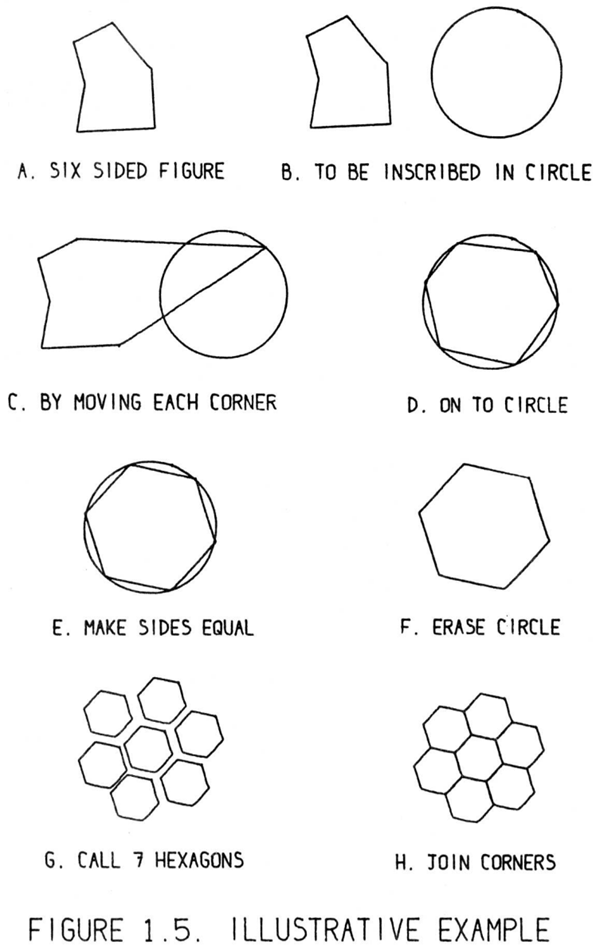
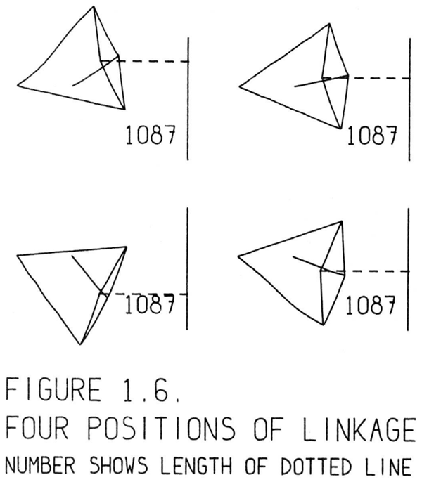
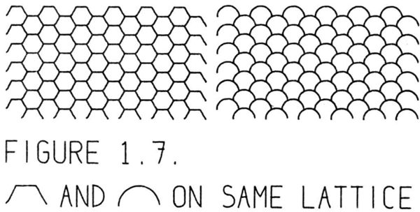

The Sketchpad system makes it possible for a man and a computer to converse rapidly through the medium of line drawings. Heretofore, most interaction between men and computers has been slowed down by the need to
reduce all communication to written statements that can be typed; in the past,
we have been writing letters to rather than conferring with our computers.
For many types of communication, such as describing the shape of a mechanical part or the connections of an electrical circuit, typed statements can prove
cumbersome. The Sketchpad system, by eliminating typed statements (except
for legends) in favor of line drawings, opens up a new area of man-machine
communication
Sketchpad（スケッチパッド）システムは、線画を介して人間とコンピュータが迅速に対話することを可能にします。これまで、人間とコンピュータの対話の多くは、あらゆる情報をキーボード入力可能なテキスト形式に変換しなければならないという制約のために、その速度が妨げられてきました。つまり、過去の私たちはコンピュータと「対話」するのではなく、コンピュータに「手紙」を書いていたようなものだったのです。
機械部品の形状や電気回路の接続関係を説明するといった多くの場面において、テキストによる記述は煩雑になりがちです。Sketchpadシステムは、（注釈などを除き）テキスト入力を排除して線画を用いることで、人間と機械の対話における新たな領域を切り開くものです。
The decision actually to implement a drawing system reflected our feeling
that knowledge of the facilities which would prove useful could only be obtained by actually trying them. The decision actually to implement a drawing
system did not mean, however, that brute force techniques were to be used to
computerize ordinary drafting tools; it was implicit in the research nature of
the work that simple new facilities should be discovered which, when implemented, should be useful in a wide range of applications, preferably including some unforseen ones. It has turned out that the properties of a computer
drawing are entirely different from a paper drawing not only because of the
accuracy, ease of drawing, and speed of erasing provided by the computer,
but also primarily because of the ability to move drawing parts around on a
computer drawing without the need to erase them. Had a working system not
been developed, our thinking would have been too strongly influenced by a
lifetime of drawing on paper to discover many of the useful servicesk that the computer can provide.
実際に作図システムを実装するという決定は、有用な機能についての知見は、実際にそれらを試してみることでしか得られないという私たちの考えを反映したものでした。しかし、作図システムを実装するということは、単に力任せの手法を用いて従来の製図用具をコンピュータ上で再現しようとしたことを意味するわけではありません。この研究の性質上、実装すれば幅広い用途（できれば予期せぬ用途も含む）に役立つような、シンプルかつ新しい機能を見つけ出すことが暗黙の目標とされていました。実際に分かったことですが、コンピュータによる作図の特性は、紙の図面とは全く異なるものでした。その理由は、コンピュータがもたらす精度の高さ、描画の容易さ、修正（消去）の速さといった点だけでなく、何よりも、図形要素を消去することなく画面上で自由に移動させることができるという点にありました。もし実際に動作するシステムを開発していなければ、私たちは長年にわたる紙への作図という経験に強く縛られ、コンピュータが提供しうる多くの有用な機能を見出すことはできなかったでしょう。
As the work has progressed, several simple and very widely applicable
facilities have been discovered and implemented. They provide a subpicture
capability for including arbitrary symbols on a drawing, a constraint capability
for relating the parts of a drawing in any computable way, and a definition copying capability for building complex relationships from combinations of simple
atomic constraints.∗ When combined with the ability to point at picture parts
given by the demonstrative light pen language, the subpicture, constraint, and definition copying capabilities produce a system of extraordinary power. As
was hoped at the outset, the system is useful in a wide range of applications,
and unforseen uses are turning up
開発が進むにつれ、いくつかの単純かつ極めて汎用性の高い機能が発見され、実装されてきました。それらには、図面に任意のシンボルを配置するための「サブピクチャ」機能、図面の構成要素間を計算可能なあらゆる方法で関連付ける「制約」機能、そして単純な基本制約の組み合わせから複雑な関係を構築するための「定義の複製」機能が含まれます。ライトペンを用いた指示操作によって図面の構成要素を指し示す機能と、これらサブピクチャ、制約、定義の複製といった機能が組み合わさることで、極めて強力なシステムが実現されています。当初の期待通り、このシステムは幅広い用途で有用であり、さらには予期せぬ活用法も次々と見出されています。
To understand what is possible with the system at present let us consider using
it to draw the hexagonal pattern of Figure 1.1. We will issue specific commands
with a set of push buttons, turn functions on and off with switches, indicate
position information and point to existing drawing parts with the light pen, rotate and magnify picture parts by turning knobs, and observe the drawing on
the display system. This equipment as provided at Lincoln Laboratory’s TX-2
computer [1] is shown in Figure 1.2. When our drawing is complete it may
be inked on paper, as were all the drawings in the thesis, by the plotter [12] shown ink Figure 1.3. It is our intent with this example to show what the computer can do to help us draw while leaving the details of how it performs its
functions for the chapters which follow.
現在このシステムで何が可能かを理解するために、図1.1に示す六角形のパターンを描画する例を考えてみましょう。ここでは、押しボタンで特定のコマンドを入力し、スイッチで機能のオン／オフを切り替え、ライトペンで位置情報の指定や既存の描画要素の指示を行い、つまみを回して図形要素の回転や拡大を行い、ディスプレイ上で描画の様子を確認します。リンカーン研究所のTX-2コンピュータ[1]に導入されたこの機器の構成を、図1.2に示します。描画が完了したら、図1.3に示すプロッタ[12]を用いて、本論文中のすべての図と同様に、紙にインクで描画出力することができます。この例では、描画作業を支援するコンピュータの能力を示すことを目的としており、その機能が具体的にどのように実現されているかという詳細については、後続の章で説明します。


Figure 1.2: TX-2 OPERATING AREA — SKETCHPAD IN USE. On the display
can be seen part of a bridge similar to that of Figure 9.6. The Author is holding
the Light pen. The push buttons used to control specific drawing functions are
on the box in front of the Author. Part of the bank of toggle switches can be
seen behind the Author. The size and position of the part of the total picture
seen on the display is obtained through the four black knobs just above the
table. (Originally on page 11.)
図1.2：TX-2の操作エリア — Sketchpad使用時の様子。ディスプレイには、図9.6のものと類似した橋の一部が映し出されている。著者はライトペンを手に持っている。特定の描画機能を制御するための押しボタンは、著者の手前にあるボックス上に配置されている。著者の背後には、トグルスイッチ群の一部が見える。ディスプレイに表示される全体図のうち、どの部分をどのような大きさで表示するかは、テーブルのすぐ上にある4つの黒いノブを使って調整する。（出典：11ページ）

Figure 1.3: PLOTTER USED WITH SKETCHPAD. A digital and analog control
system makes the plotter draw straight lines and circles either under direct
control of the TX-2 or off-line from punched paper tape. (Originally on page
12.)
図1.3：Sketchpadで使用されたプロッター。デジタルおよびアナログ制御システムにより、このプロッターはTX-2の直接制御下、またはパンチテープを用いたオフライン動作のいずれかで、直線や円を描画する。（出典：12ページ）
If we point the light pen at the display system and press a button called
“draw”, the computer will construct a straight line segment∗ which stretches
like a rubber band from the initial to the present location of the pen as shown
in Figure 1.4. Additional presses of the button will produce additional lines
until we have made six, enough for a single hexagon. To close the figure we
return the light pen to near the end of the first line drawn where it will “lock
on” to the end exactly. A sudden flick of the pen terminates drawing, leaving
the closed irregular hexagon shown in Figure 1.5A.
ライトペンをディスプレイ装置に向け、「描画（draw）」ボタンを押すと、図1.4に示すように、ペンの開始位置から現在位置へとゴム紐のように伸びる直線分がコンピュータによって生成されます。ボタンをさらに押していくと線が追加され、最終的に六角形を構成するのに十分な6本の線が描かれます。図形を閉じるには、最初に描いた線の端の近くにライトペンを戻すと、その端に正確に「ロックオン」します。ここでペンを素早く動かす（フリックする）と描画が終了し、図1.5Aに示すような、閉じた不規則な六角形が残ります。

To make the hexagon regular, we can inscribe it in a circle. To draw the
circle we place the light pen where the center is to be and press the button
“circle center”, leaving behind a center point. Now, choosing a point on the
circle (which fixes the radius,) we press the button “draw” again, this time
getting a circle arc
∗ whose length only is controlled by light pen position as
shown in Figure 1.4.
正六角形を作るために、円に内接させることができます。円を描くには、中心となる位置にライトペンを置き、「circle center（円の中心）」ボタンを押して中心点を配置します。次に、円周上の点（これにより半径が決定されます）を選んで再び「draw（描画）」ボタンを押すと、円弧が描かれます。
∗ この円弧の長さは、図1.4に示すように、ライトペンの位置によってのみ制御されます。
Next we move the hexagon into the circle by pointing to a corner of the
hexagon and pressing the button “move” so that the corner followsk the light
pen, stretching two rubber band line segments behind it. By pointing to the
circle and giving the termination flick we indicate that the corner is to lie on
the circle. Each corner is in this way moved onto the circle at roughly equal
spacing around it as shown in Figure 1.5D.
次に、六角形を円の内部へと移動させます。これには、六角形の頂点をライトペンで指し、「move（移動）」ボタンを押します。するとその頂点はライトペンに追従し、背後に2本のゴムバンド状の線分を引き伸ばしながら移動します。円を指して「フリック」操作（終了の合図）を行うことで、その頂点を円周上に配置するよう指定します。このようにして、図1.5Dに示すように、各頂点が円周上のほぼ等間隔の位置へと移動されます。

We have indicated that the vertices of the hexagon are to lie on the circle,
and they will remain on the circle throughout our further manipulations. If we
also insist that the sides of the hexagon be of equal length, a regular hexagon
will be constructed. This we can do by pointing to one side and pressing the
“copy” button, and then to another side and giving the termination flick. The
button in this case copies a definition of equal length lines and applies it to the lines indicated. We have said, in effect, make this line equal in length to that
line. We indicate that all six lines are equal in length by five such statements.
The computer satisfies all existing conditions (if it is possible) whenever we
turn on a toggle switch. This done, we have a complete regular hexagon inscribed in a circle. We can erase the entire circle by pointing to any part of
it and pressing the “delete” button. The completed hexagon is shown in Figure 1.5F.
六角形の頂点は円周上に配置されるよう指定されており、その後の操作中も頂点は円周上に留まります。さらに六角形の各辺の長さを等しくするよう指定すれば、正六角形が構成されます。これを行うには、ある辺を指し示して「コピー」ボタンを押し、続いて別の辺を指し示して終了のフリック操作を行います。この場合、ボタンは「等長な線分」という定義をコピーし、指定された線分に適用します。つまり、「この線分をあの線分と同じ長さにする」という指示を出したことになります。同様の操作を5回繰り返すことで、6つの線分すべてが等長であることを指定します。トグルスイッチをオンにするたびに、コンピュータは（可能であれば）既存のすべての条件を満たすように処理を行います。こうして、円に内接する完全な正六角形が出来上がります。円の任意の部分を指し示して「削除」ボタンを押せば、円全体を消去することができます。完成した六角形を図1.5Fに示します。
To make the hexagonal pattern of Figure 1.1 we wish to attach a large number of hexagons together by their corners, and so we designate the six corners
of our hexagon as attachment points by pointing to each and pressing a button. We now file away the basic hexagon and begin work on a fresh “sheet of
paper” by changing a switch setting. On the new sheet we assemble, by pressing a button to create each hexagon as a subpicture, six hexagons around a
central seventh in approximate position as shown in Figure 1.5G. Subpictures
may be positioned, each in its entirety, with the light pen, rotated or scaled
with the knobsk and fixed in position by the pen flick termination signal; but
their internal shape is fixed. By pointing to the corner of one hexagon, pressing a button, and then pointing to the corner of another hexagon we can fasten
those corners together, because these corners have been designated as attachment points. If we attach two corners of each outer hexagon to the appropriate
corners of the inner hexagon, the seven are uniquely related, and the computer
will reposition them as shown in Figure 1.5H. An entire group of hexagons,
once assembled, can be treated as a symbol. The entire group can be called up
on another “sheet of paper” as a subpicture and assembled with other groups
or with single hexagons to make a very large pattern. Using Figure 1.5H seven
times we get the pattern of Figure 1.1. Constructing the pattern of Figure 1.1
takes less than five minutes with the Sketchpad system
図1.1に示す六角形のパターンを作成するために、多数の六角形をその頂点で連結することにします。そこで、六角形の6つの頂点をそれぞれ指し示してボタンを押すことで、それらを「連結点」として指定します。次に、基本となる六角形を保存し、スイッチの設定を切り替えて新しい「紙面」での作業を開始します。新しい紙面では、ボタン操作で各六角形を「サブピクチャ」として生成し、図1.5Gに示すように、中央の1つの六角形の周囲におおよその位置関係で6つの六角形を配置・組み立てていきます。サブピクチャは、ライトペンを使って全体を移動させたり、つまみ（ノブ）で回転や拡大・縮小を行ったり、ペンを素早く動かす操作（フリック）による終了信号で位置を確定させたりすることができますが、その内部の形状は固定されています。ある六角形の頂点を指してボタンを押し、続いて別の六角形の頂点を指すことで、それらの頂点を連結させることができます。これは、これらの頂点が連結点としてあらかじめ指定されているためです。外側の各六角形の2つの頂点を内側の六角形の適切な頂点に連結すると、これら7つの六角形の位置関係が一意に定まり、コンピュータは図1.5Hに示すようにそれらを再配置します。組み立てられた六角形のグループ全体は、一つの「シンボル」として扱うことができます。このグループ全体を別の「紙面」にサブピクチャとして呼び出し、他のグループや単独の六角形と組み合わせることで、非常に大きなパターンを作成することが可能です。図1.5Hのパターンを7回使用することで、図1.1のパターンが得られます。Sketchpadシステムを使えば、図1.1のパターンを5分以内に作成することができます。
In the introductory example above we have seen how to draw lines and circles
and how to move existing parts of the drawing around. We used the light pen
both to position parts of the drawing and to point to existing parts. For example, we pointed to the circle to erase it, and while drawing the sixth line, we
pointed to the end of the first line drawn to close the hexagon. We also saw in
action the very general subpicture, constraint, and definition copying capabilities
of the system.
上記の導入的な例では、線や円を描画する方法や、既存の図形要素を移動させる方法について見てきました。ライトペンは、図形要素を配置する際にも、既存の要素を指示する際にも使用されました。例えば、円を消去する際にはその円を指示し、6本目の線を描く際には、六角形を閉じるために最初に描いた線の端点を指示しました。また、このシステムが備える、汎用性の高い「サブピクチャ（部分図）」、「拘束」、そして「定義のコピー」といった機能が実際に動作する様子も確認しました。
As we have seen in the introductory example, drawing with the Sketchpad
system is different from drawing with an ordinary pencil and paper. Most important of all, the Sketchpad drawing itself is entirely different from the trail
of carbon left on a piece of paper. Information about how the drawing is tied
together is stored in the computer as well as the information which gives the
drawing its particular appearance. Since the drawing is tied together, it will
keep a useful appearance even when parts of it are moved. For example, when
we moved the corners of the hexagon onto the circle, the lines next to each
cornerk were automatically moved so that the closed topology of the hexagon
was preserved. Again, since we indicated that the corners of the hexagon were
to lie on the circle they remained on the circle throughout our further manipulations.
冒頭の例で見たように、Sketchpadシステムを使った描画は、通常の鉛筆と紙を使った描画とは異なります。何よりも重要なのは、Sketchpadによる描画そのものが、紙に残る黒鉛の跡とは全く別物であるという点です。描画の見た目を決定づける情報だけでなく、描画の各要素がどのように結びついているかという情報も、コンピュータ内に保存されるからです。要素同士が結びついているため、一部を移動させたとしても、描画は適切な形状を保ち続けます。例えば、六角形の頂点を円周上に移動させた際、各頂点に接続する線分も自動的に移動し、六角形の閉じたトポロジー（接続関係）が維持されました。また、六角形の頂点を円周上に配置するよう指定していたため、その後の操作を行っている間も、それらの頂点は円周上に留まり続けました。
It is this ability to store information relating the parts of a drawing to each
other that makes Sketchpad most useful. For example, the linkage shown in
Figure 1.6 was drawn with Sketchpad in just a few minutes. Constraints were
applied to the linkage to keep the length of its various members constant. Rotation of the short central link is supposed to move the left end of the dotted
line vertically. Since exact information about the properties of the linkage has
been stored in Sketchpad, it is possible to observe the motion of the entire
linkage when the short central link is rotated. The value of the number in Figure 1.6 was constrained to indicate the length of the dotted line, comparing the
actual motion with the vertical line at the right of the linkage. One can observe
that for all positions of the linkage the length of the dotted line is constant, demonstrating that this is indeed a straight line linkage. Other examples of
moving drawings made with Sketchpad may be found in the final chapter.
図形の構成要素間の関係性に関する情報を保持できるという点こそが、Sketchpadの最大の利点です。例えば、図1.6に示すリンク機構は、Sketchpadを使ってわずか数分で描画されたものです。この機構には、各リンク（構成部材）の長さを一定に保つための拘束条件が設定されています。中央の短いリンクを回転させると、点線の左端が垂直方向に移動する仕組みになっています。リンク機構の特性に関する正確な情報がSketchpad内に保持されているため、中央の短いリンクを回転させた際の機構全体の動きを観察することが可能です。図1.6に示された数値は点線の長さを表すように拘束されており、機構の右側にある垂直線と比較できるようになっています。リンク機構がどのような位置にあっても点線の長さは一定であり、この機構が確かに直線運動を行うリンク機構（直線リンク機構）であることが確認できます。Sketchpadで作成された「動く図形」のその他の例については、最終章で紹介しています。

As well as storing how the various parts of the drawing are related, Sketchpad stores the structure of the subpicture used. For example, the storage
for the hexagonal pattern of Figure 1.1 indicates that this pattern is made of
smaller patterns which are in turn made of smaller patterns which are composed of single hexagons. If the master hexagon is changed, the entire appearance of the hexagonal pattern will be changed. The structure of the pattern
will, of course, be the same. For example, if we change the basic hexagon into
a semicircle, the fish scale pattern shown in Figure 1.7 instantly results.
Sketchpadは、図面の各部分の相互関係を記憶するだけでなく、使用されているサブピクチャ（部分図）の構造も記憶します。例えば、図1.1の六角形パターンのデータは、このパターンがより小さなパターンで構成され、それらのパターンもさらに小さなパターンから成り、最終的には個々の六角形で構成されていることを示しています。元となる六角形を変更すれば、六角形パターン全体の見た目も変わりますが、パターンの構造自体はもちろん変わりません。例えば、基本となる六角形を半円に変更すれば、図1.7に示すような魚の鱗（うろこ）状のパターンが即座に出来上がります。

Since Sketchpad stores the structure of a drawing, a Sketchpad drawing explicitly indicates similarity of symbols. In an electrical drawing, for example, all transistor symbols are created from a single master transistor drawing.
If some change to the basic transistor symbol is made, this change appears at
once in all transistor symbols without further effort. Most important of all, the
computer “knows” that a “transistor” is intended at that place in the circuit.
It has no need to interpret the collection of lines which we would easily recognize as a transistor symbol. Since Sketchpad stores the topology of the drawing
as we saw in closing the hexagon, one indicates both what a circuit looks like
and its electrical connections when one draws it with Sketchpad. One can see
that the circuit connections are stored because moving a component automatically moves any wiring on that component to maintain the correct connections.
Sketchpad circuit drawings will soon be used as inputs for a circuit simulator.
Having drawn a circuit one will find out its electrical properties.
Sketchpadは図面の構造を保持しているため、描かれた図形において記号同士の類似性が明確に示されます。例えば電気回路図において、すべてのトランジスタ記号は、単一の「マスター」となるトランジスタ図形から作成されます。
基本となるトランジスタ記号に変更を加えると、その変更は即座にすべてのトランジスタ記号に反映され、個別に修正する手間はかかりません。何よりも重要なのは、コンピュータがその回路上の位置に「トランジスタ」が配置されていることを「認識」しているという点です。
人間であれば容易にトランジスタ記号だと認識できる線の集まりを、コンピュータがわざわざ解釈する必要はないのです。Sketchpadは（六角形を閉じる操作の例で見られたように）図面のトポロジー（接続関係）を保持しているため、Sketchpadで回路を描くことは、回路の形状と電気的な接続関係の両方を定義することになります。回路の接続関係が保持されていることは、構成要素を移動させた際に、正しい接続を維持するようにその要素に接続された配線も自動的に追従して移動することから確認できます。
Sketchpadで作成した回路図は、やがて回路シミュレータへの入力データとして利用されるようになるでしょう。
回路を描けば、その電気的特性を把握することが可能になるのです。
Construction of a drawing with Sketchpad is itself a model of the design process. The locations of the points and lines of the drawing model the variables
of a design, and the goemetric constraints applied to the points and lines of
the drawing model the design constraints which limit the values of design
variables. The ability of Sketchpad to satisfy the geometric constraints applied
to the parts of a drawing models the ability of a good designer to satisfy all
the design conditions imposed by the limitations of his materials, cost, etc. In
fact, since designers in many fields produce nothing themselves but a draw ing of a part, design conditions may well be thought of as applying to thek
drawing of a part rather than to the part itself. If such design conditions were
added to Sketchpad’s vocabulary of constraints the computer could assist a
user not only in arriving at a nice looking drawing, but also in arriving at a
sound design.
Sketchpadを用いて図面を作成する作業そのものが、設計プロセスのモデルとなっています。図面上の点や線の位置は設計における変数をモデル化しており、それらに適用される幾何学的拘束は、設計変数の値を制限する設計上の制約をモデル化しています。図面の構成要素に適用された幾何学的拘束をSketchpadが満たす能力は、材料やコストなどの制約によって課されるあらゆる設計条件を、優れた設計者が満たす能力をモデル化したものです。実際、多くの分野の設計者は部品そのものではなく部品の図面を作成するだけであるため、設計条件は部品そのものではなく、部品の図面に適用されるものと考えることができます。もしこうした設計条件がSketchpadの拘束条件の語彙に加えられれば、コンピュータは、見栄えの良い図面を作成するだけでなく、堅実な設計を行う上でもユーザーを支援できるようになるでしょう。
At the outset of the research no one had ever drawn engineering drawings
directly on a computer display with nearly the facility now possible, and consequently no one knew what it would be like. We have now accumulated
about a hundred hours of experience actually making drawings with a working system. As is shown in the final chapter, application of computer drawing
techniques to a variety of problems has been made. As more and more applications have been made it has become clear that the properties of Sketchpad
drawings make them most useful in four broad areas:
研究の当初、現在のような手軽さでコンピュータのディスプレイ上に直接図面を描いた者は誰もおらず、したがって、それがどのようなものになるのかは誰にも分かっていませんでした。現在では、実際に稼働するシステムを用いて図面を作成する経験を約100時間積み重ねてきました。最終章で示されているように、コンピュータによる作図技術は様々な問題に適用されてきました。適用事例が増えるにつれて、Sketchpadで作成された図面の特性は、以下の4つの広範な分野において極めて有用であることが明らかになってきました。
For Making Small Changes to Existing Drawings:
既存の図面に軽微な変更を加える場合：
Each time a drawing is made, a description of that drawing is stored
in the computer in a form that is readily transferred to magnetic
tape. Thus, as time passes, a library of drawings will develop,
parts of which may be used in other drawings at only a fraction
of the investment of time that was put into the original drawing.
Since a drawing stored in the computer may contain explicit representation of design conditions in its constraints, manual change
of a critical part will automatically result in appropriate changes to
related parts.
図面が作成されるたびに、その図面のデータは磁気テープへ容易に転送可能な形式でコンピュータに保存されます。こうして時間の経過とともに図面のライブラリが構築され、その一部は、元の図面の作成に要した時間のほんの一部を費やすだけで、他の図面に再利用できるようになります。また、コンピュータに保存された図面には、設計条件が制約として明示的に組み込まれている場合があるため、重要な部分を手動で変更すると、それに関連する部分も自動的に適切に修正されることになります。
For Gaining Scientific or Engineering Understanding of Operations That Can
Be Described Graphically:
図式的に記述可能な操作について、科学的または工学的な理解を得るために：
The description of a drawing stored in the Sketchpad system is
more than a collection of static drawing parts, lines and curves,
etc. A drawing in the Sketchpad system may contain explicit statements about the relations between its parts so that as one part is changed the implications of this change become evident throughout the drawing. It is possible, as we saw in Figure 1.6, to give the
property of fixed length to lines so as to study mechanical linkages,
observing thek path of some parts when others are moved
Sketchpadシステムに保存される図面の記述は、単なる静的な描画要素（線や曲線など）の集合にとどまるものではありません。Sketchpadシステムにおける図面には、構成要素間の関係に関する明示的な定義を含めることができます。そのため、ある要素を変更すると、その変更が図面全体に及ぼす影響が即座に明らかになります。図1.6で示したように、線分に「長さ固定」という特性を持たせることで、機械的なリンク機構を検討することも可能です。これにより、特定の要素を動かした際に他の要素がどのような軌跡をたどるかを観察できるようになります。
As we saw in Figure 1.7 any change made in the definition of a
subpicture is at once reflected in the appearance of that subpicture
wherever it may occur. By making such changes, understanding
of the relationships of complex sets of subpictures can be gained.
For example, one can study how a change in the basic element of a
crystal structure is reflected throughout the crystal.
図1.7で示したように、サブピクチャの定義に加えられた変更は、そのサブピクチャが使用されているあらゆる箇所での表示に即座に反映されます。こうした変更を行うことで、複雑なサブピクチャ群の相互関係を理解することができます。例えば、結晶構造の基本要素に対する変更が、結晶全体にどのように反映されるかを調べることが可能です。
As a Topological Input Device for Circuit Simulators, etc.:
回路シミュレータ等のためのトポロジカル入力デバイスとして：
Since the ring structure storage of Sketchpad reflects the topology
of any circuit or diagram, it can serve as an input for many network
or circuit simulating programs. The additional effort required to
draw a circuit completely from scratch with the Sketchpad system
may well be recompensed if the properties of the circuit are obtainable through simulation of the circuit drawn.
Sketchpadのリング構造によるデータ格納方式は、あらゆる回路や図面のトポロジーを反映しているため、多くのネットワークや回路のシミュレーション・プログラムへの入力データとして利用可能です。Sketchpadシステムを用いて回路をゼロから描画するには相応の手間がかかりますが、描画した回路の特性をシミュレーションによって把握できるのであれば、その労力に見合うだけの価値は十分にあると言えるでしょう。
For Highly Repetitive Drawings:
繰り返しが多い図面の場合：
The ability of the computer to reproduce any drawn symbol anywhere at the press of a button, and to recursively include subpictures within subpictures makes it easy to produce drawings which
are composed of huge numbers of parts all similar in shape. Great
interest in doing this comes from people in such fields as memory
development and micro logic where vast numbers of elements are
to be generated at once through photographic processes. Master
drawings of the repetitive patterns necessary can be easily drawn.
Here again, the ability to change the individual element of the repetitive structure and have the change at once brought into all subelements makes it possible to change the elements of an array without redrawing the entire array.
ボタン一つで描画された任意のシンボルを任意の場所に再現し、さらに「サブピクチャ（部分図）」の中に別のサブピクチャを再帰的に組み込めるというコンピュータの機能により、形状の似た多数の部品で構成される図面を容易に作成できます。こうした手法は、写真技術を用いて膨大な数の素子を一度に形成する必要があるメモリ開発やマイクロロジックといった分野で、特に大きな関心を集めています。必要な反復パターンのマスター図面も容易に作成可能です。また、反復構造を構成する個々の要素を変更し、その変更を即座にすべてのサブ要素に反映させることができるため、配列全体を描き直すことなく、配列内の要素を変更することが可能になります。
Those readers who are primarily interested in the application of Sketchpad
are invited to turn next to Chapter IX, page 120 for aditional examples and
conclusions.
主にSketchpadの応用に関心をお持ちの読者は、さらなる例や結論について、第9章（120ページ）にお進みください。